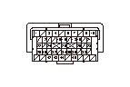

PGM-FI警告灯故障診断
コンビネーション メータの点検
1-1
イグニッション スイッチをON（
II
）にする
1-2
コンビネーション メータの自己診断を行う
◆ PGM-FI警告灯は点滅するか
YES
-
ステップ
2
へ進む
NO
-
新品コンビネーション メータを使用してコンビネーション メータの自己診断を行い、正常ならば元のコンビネーション メータを
新品コンビネーション メータに交換する
SCSラインの状態の点検
2-1
データ リンク カプラにHDSを接続する
2-2
データ リスト内のSCSをHDSで確認する
◆ ショートした状態か
YES
-
ステップ
3
へ進む
NO
-
ECUのプログラムが最新でない場合は、
最新のプログラムにアップデート
し、再診断する
既にプログラムが最新であった場合は、
新品ECUに交換
し、再診断する
ECUとデータ リンク カプラ間（SCSライン）の短絡点検
3-1
イグニッション スイッチをOFFにする
3-2
HDSでSCSモードのSCSショートを実行する
3-3
ECUカプラA（49P）を外す
3-4
データ リンク カプラよりHDSのカプラを外す
3-5
ECUカプラA（49P）のNo.32端子とボディ アース間の導通を確認する
◆ 導通があるか
YES
-
ECU（A32端子）とデータ リンク カプラ、SRSユニット、オート レベリング コントロール ユニット、スマートECU間コードの短絡
NO
-
ECUのプログラムが最新でない場合は、
最新のプログラムにアップデート
し、再診断する
既にプログラムが最新であった場合は、
新品ECUに交換
し、再診断する
